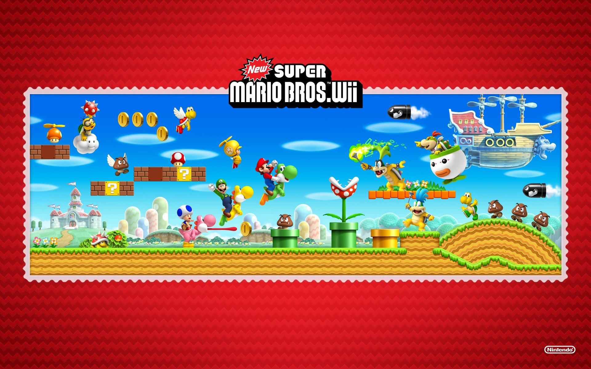

Esta es una pequeña Guia sobre el juego de Super Mario Bors para la Wii.
Este juego es el segundo de la sub-saga New Super Mario Bros y decimosegundo juego de la saga 2D de este famoso plataformero.

Sobre el Videojuego:
Plataforma: Nintendo Wii.
Desarrollador: Nintendo EAD (Entertainment Analysis & Development).